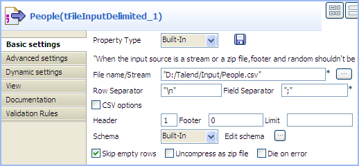

|
Component family |
Data Quality | |
|
Function |
Compares entries and sorts out duplicate entries from the input flow. | |
|
Purpose |
Ensures data quality of input or output flow in a Job. | |
|
Basic settings |
Schema and Edit schema |
A schema is a row description, i.e., it defines the number of fields that will be processed and passed on to the next component. The schema is either built-in or remote in the Repository. If you are using Talend Open Studio for Big Data, only the Built-in mode is available. Click Edit Schema to make changes to the schema. Note that if you make changes, the schema automatically becomes built-in. Click Sync columns to retrieve the schema from the previous component connected in the Job. NoteThis component offers the advantage of the dynamic schema feature. This allows you to retrieve unknown columns from source files or to copy batches of columns from a source without mapping each column individually. For further information about dynamic schemas, see Talend Data Integration Studio User Guide. |
|
|
|
Built-in: The schema will be created and stored locally for this component only. Related topic: see Talend Data Integration Studio User Guide. |
|
|
|
Repository: The schema already exists and is stored in the Repository, hence can be reused in various projects and job flowcharts. Related topic: see Talend Data Integration Studio User Guide. |
|
|
Unique key |
In this area, select one or more columns to carry out deduplication on the particular column(s) - Select the Key attribute check box to carry out deduplication on all the columns - Select the Case sensitive check box to differentiate upper case and lower case |
|
Advanced settings |
Only once each duplicated key |
Select this check box if you want to have only the first duplicated entry in the column(s) defined as key(s) sent to the output flow for duplicates. |
|
|
Use of disk (suitable for processing large row set) |
Select this check box to enable generating temporary files on the hard disk when processing a large amount of data. This helps to prevent Job execution failure caused by memory overflow. With this check box selected, you need also to define: - Buffer size in memory: Select the number of rows that can be buffered in the memory before a temporary file is to be generated on the hard disk. - Directory for temp files: Set the location where the temporary files should be stored. WarningMake sure that you specify an existing directory for temporary files; otherwise your Job execution will fail. |
|
|
tStatCatcher Statistics |
Select this check box to gather the job processing metadata at a job level as well as at each component level. |
|
Usage |
This component handles flow of data therefore it requires input and output, hence is defined as an intermediary step. | |
|
Limitation |
n/a | |
In this five-component Job, we will sort entries on an input name list, find out duplicated names, and display the unique names and the duplicated names on the Run console.

Drop a tFileInputDelimited, a tSortRow, a tUniqRow, and two tLogRow components from the Palette to the design workspace, and name the components as shown above.
Connect the tFileInputDelimited component, the tSortRow component, and the tUniqRow component using Row > Main connections.
Connect the tUniqRow component and the first tLogRow component using a Main > Uniques connection.
Connect the tUniqRow component and the second tLogRow component using a Main > Duplicates connection.
Double-click the tFileInputDelimited component to display its Basic settings view.

Click the [...] button next to the File Name field to browse to your input file.
Define the header and footer rows. In this use case, the first row of the input file is the header row.
Click Edit schema to define the schema for this component. In this use case, the input file has five columns: Id, FirstName, LastName, Age, and City. Then click OK to propagate the schema and close the schema editor.
Double-click the tSortRow component to display its Basic settings view.

To rearrange the entries in the alphabetic order of the names, add two rows in the Criteria table by clicking the plus button, select the FirstName and LastName columns under Schema column, select alpha as the sorting type, and select the sorting order.
Double-click the tUniqRow component to display its Basic settings view.

In the Unique key area, select the columns on which you want deduplication to be carried out. In this use case, you will sort out duplicated names.
In the Basic settings view of each of the tLogRow components, select the Table option to view the Job execution result in table mode.

In this use case, we will use a Job similar to the one in the previous scenario to deduplicate the input entries about several families, so that only one person per family stays on the name list. As all the components in this Job support the dynamic schema feature, we will leverage this feature to save the time of configuring individual columns of the schemas.
Drop these components from the Palette to the design workspace: tFileInputDelimited, tExtractDynamicFields, tUniqRow, tFileOutputDelimited, and tLogRow, and name the components as shown above to better identify their roles in the Job.
Connect the component labelled People, the component labelled Split_Column, and the component labelled Deduplicate using Row > Main connections.
Connect the component labelled Deduplicate and the component labelled Unique_Families using a Main > Uniques connection.
Connect the component labelled Deduplicate and the component labelled Duplicated_Families using a Main > Duplicates connection.
Double-click the component labelled People to display its Basic settings view.
Warning
The dynamic schema feature is only supported in Built-In mode and requires the input file to have a header row.
Click the [...] button next to the File Name/Stream field to browse to your input file.
Define the header and footer rows. In this use case, the first row of the input file is the header row.
Click Edit schema to define the schema for this component.
In this use case, the input file has five columns: FirstName, LastName, HouseNo, Street, and City. However, as we can leverage the advantage of the dynamic schema feature, we simply define one dynamic column in the schema, Dyna in this example.
To do so :
Add a new line by clicking the [+] button.
Type Dyna in the Column field.
Select Dynamic from the Type list.

Then, click OK to propagate the schema and close the [Schema] dialog box.
Double-click the component labelled Split_Column to display its Basic settings view.
We will use this component to split the dynamic column of the input schema into two columns, one for the first name and the other for the family related information. To do so:
Click Edit schema to open the [Schema] dialog box.

In the output panel, click the [+] button to add two columns for the output schema, and name them FirstName and FamilyInfo respectively.
Select String from the Type list for the FirstName column to extract this column from the input schema to carry the first name of each person on the name list.
Select Dynamic from the Type list for the FamilyInfo column so that this column will carry the rest information of each person on the name list: the last name, house number, street and city, which all together will identify a family.
Then, click OK to propagate the schema and close the [Schema] dialog box.
Double-click the component labelled Deduplicate to display its Basic settings view.

In the Unique key area, select the Key attribute check box for the FamilyInfo column to carry out deduplication on the family information.
In the Basic settings view of the tFileOutputDelimited component, which is labelled Deduplicated_Families, define the output file path, select the Include header check box, and leave the other settings as they are.

In the Basic settings view of the tLogRow component, which is labelled Duplicated_Families, select the Table option to view the Job execution result in table mode.